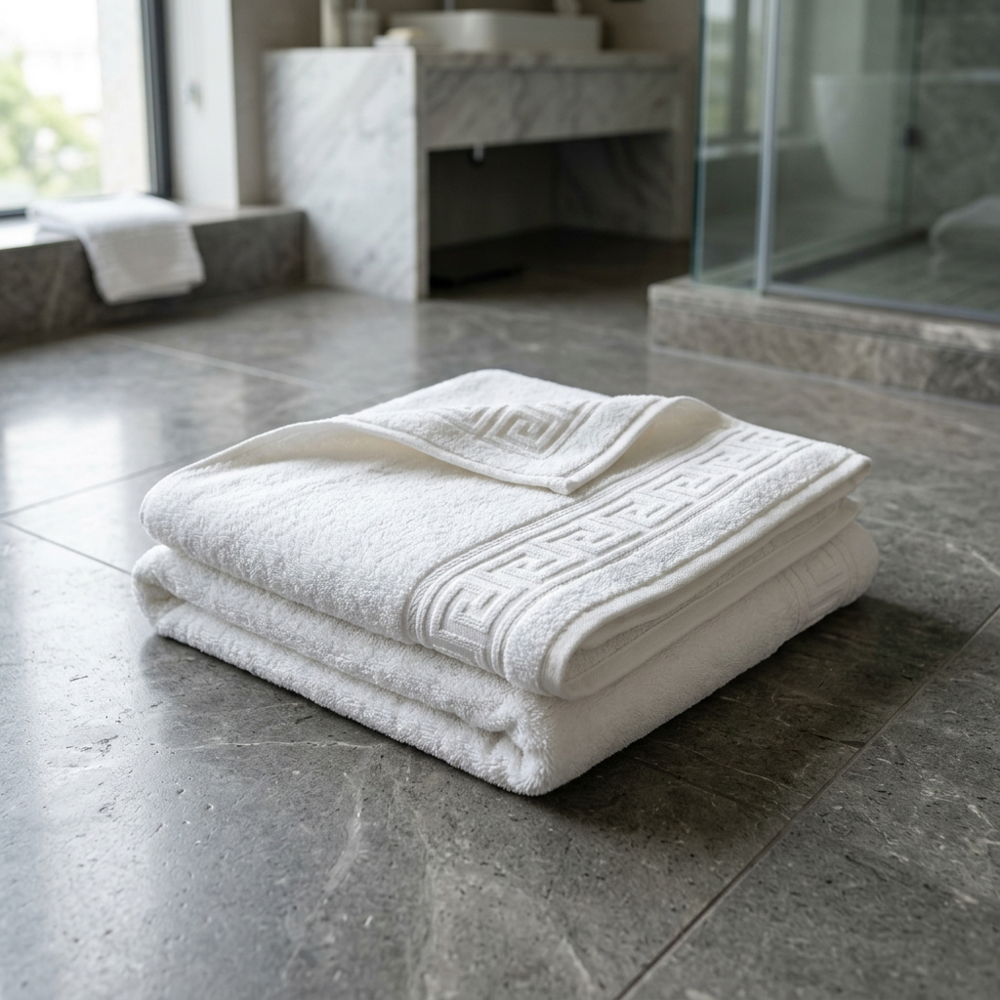
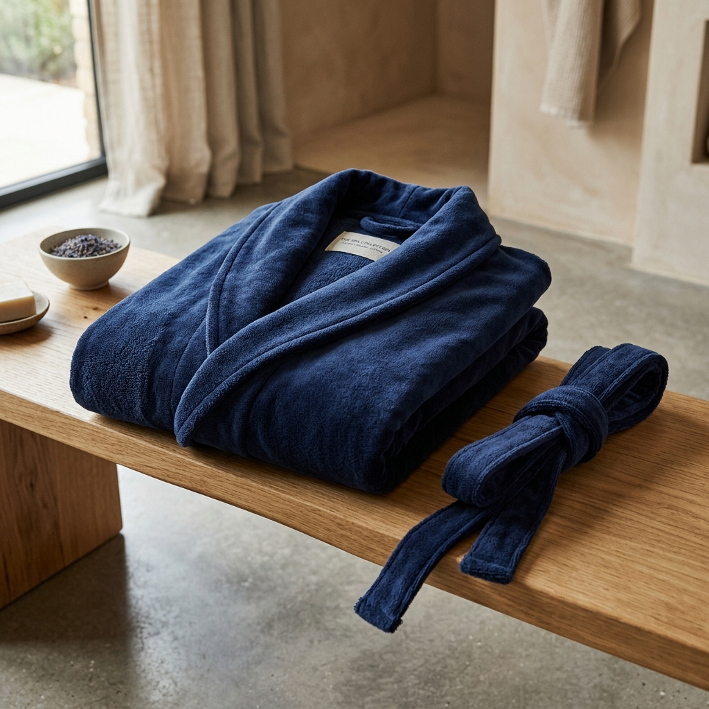
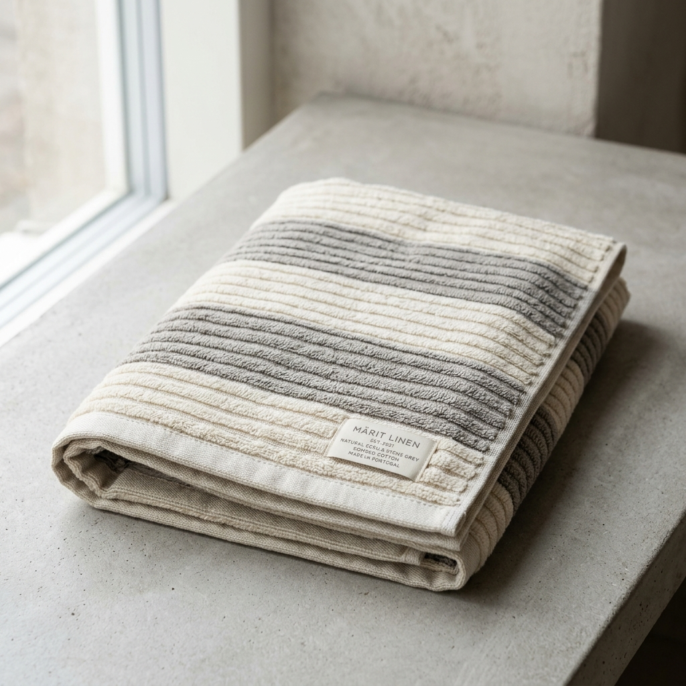

Coleções de banho concebidas com precisão, estética e durabilidade.
Do retalho sofisticado à exigência da hotelaria de luxo. Explore as nossas referências técnicas estruturadas por gramagem, fibra e tipologia de uso.
 550 g/m²
550 g/m²
Toalha Turco Algodão Penteado
Artigo de referência da DSC. Laçada de turco densa e homogénea que garante toque aveludado e absorção rápida desde a primeira utilização.
- Composição:
- 100% Algodão Penteado Long-Staple
- GSM:
- 550 g/m²
- Laçada:
- Simples 16/1 Ring-Spun
 700 g/m²
700 g/m²
Toalha Linha Heavy Contract
Desenvolvida especificamente para alta rotação e lavandarias industriais. Fio retorcido com elevada resistência mecânica e laçada anti-puxão.
- Composição:
- Fio Retorcido 24/2 (Anti-Snag)
- GSM:
- 700 g/m²
- Acabamento:
- Costura Dupla 4 Lados
 420 g/m²
420 g/m²
Toalha Ninho de Abelha (Waffle)
Design contemporâneo e secagem ultrarrápida. Estrutura tridimensional alveolar que reduz substancialmente o consumo energético na lavagem e secagem.
- Composição:
- 80% Alg. Orgânico / 20% Linho
- GSM:
- 420 g/m²
- Alvéolo:
- Geometria 6x6 mm
 600 g/m²
600 g/m²
Toalha Turco Zero-Twist Premium
Fibras sem torção que aprisionam micro-bolsas de ar no interior do fio. Proporciona um volume visual extraordinário com extrema suavidade cutânea.
- Composição:
- 100% Algodão Nobre Solúvel PVA
- GSM:
- 600 g/m²
- Toque:
- Ultra Aveludado Plump

950 g/m²Tapete de Banho Pé de Hotel Greca
Estrutura ultra-densa em fio retorcido duplo concebida para saídas de duche em hotéis 5 estrelas. Bordo em moldura Greca clássica tecida em relevo.
- Composição:
- 100% Algodão Cardado Retorcido
- GSM:
- 950 g/m²
- Bainha:
- Travamento de Segurança 4 Cantos

450 g/m² (850g total)Roupão Velour Gola Xale Spa Luxury
Exterior em veludo cortado de brilho nobre e interior em turco absorvente. Corte unissexo ergonómico com cinto cosido e dois bolsos frontais de precisão.
- Composição:
- 100% Algodão Penteado Velour
- Construção:
- Dual-Face (Velour / Terry)
- Tamanhos:
- S, M, L, XL, XXL

500 g/m²Toalha Canelada Puro Algodão & Linho
Padrão com canelado arquitetónico linear que proporciona uma massagem sutil à pele. Excelente equilíbrio de gramagem e tempo de secagem.
- Composição:
- 90% Algodão Penteado / 10% Linho
- GSM:
- 500 g/m²
- Padrão:
- Canelado Relevo Dobby
480 g/m²
Piquet Favo Triplo Relevo Alto
Tecelagem Jacquard com alvéolos profundos que geram retenção térmica e rápida drenagem de humidade. Perfeito para spas e resorts sustentáveis.
- Composição:
- 100% Algodão Orgânico Certificado
- GSM:
- 480 g/m²
- Estabilidade:
- Pré-Encolhido Sanforizado
Tabela de Tamanhos & Medidas Internacionais de Banho
Gama completa de formatos fabricados segundo as normas europeias e norte-americanas para retalho e hotelaria de alta gama.
| Denominação | Dimensão Métrica (cm) | Dimensão Imperial (in) | Peso Médio (550g) | Aplicação Comercial |
|---|---|---|---|---|
| Toalhete de Rosto / Lavabo (Guest) | 30 × 50 cm | 12 × 20 in | ~83 g | Hotéis, lavabos sociais, spas, kits de boas-vindas |
| Toalha de Rosto (Hand Towel) | 50 × 100 cm | 20 × 40 in | ~275 g | Uso diário de banho e hotelaria de luxo |
| Toalha de Banho (Bath Towel) | 70 × 140 cm | 28 × 55 in | ~539 g | Standard europeu de secagem de corpo |
| Lençol de Banho XL (Bath Sheet) | 100 × 150 cm | 40 × 60 in | ~825 g | Suítes presidenciais, retalho premium e bem-estar |
| Tapete de Banho (Bath Mat 950g) | 50 × 70 cm | 20 × 28 in | ~333 g | Piso de duche de alto tráfego com absorção de segurança |